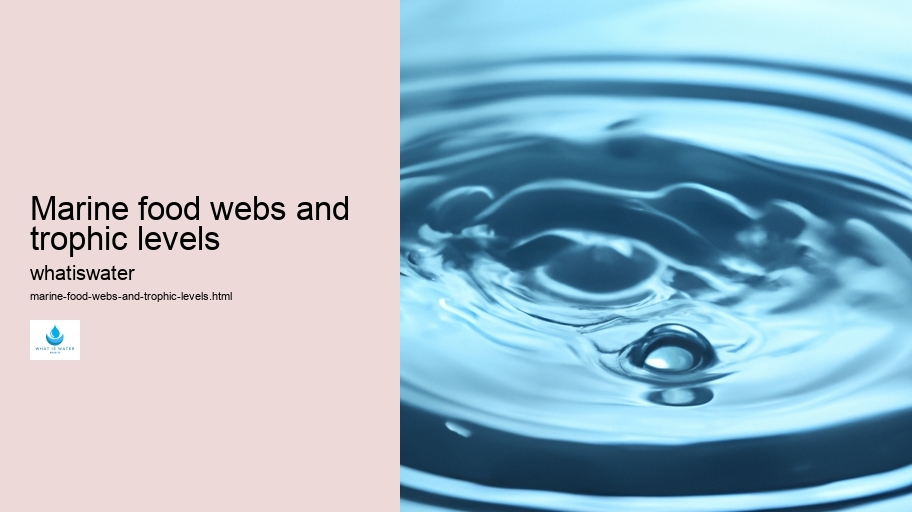

Hydrological Cycle
Hydrological Cycle
Evaporation and transpiration
Condensation and cloud formation
Precipitation and rain patterns
Surface runoff and river systems
Groundwater flow and aquifers
Snowmelt and glacial processes
Water storage in oceans lakes and reservoirs
Soil moisture and infiltration
Water balance and budgeting
Human impact on the hydrological cycle
Marine Ecosystems
Marine Ecosystems
Coral reefs and their biodiversity
Mangrove forests as coastal protectors
Ocean currents and climate regulation
Deepsea habitats and extremophiles
Intertidal zones and estuarine ecosystems
Marine food webs and trophic levels
Freshwater Ecosystems
Freshwater Ecosystems
Conservation efforts for marine species
Marine biogeochemical cycles
Impact of global warming on oceans
Water Resource Management
Water Resource Management
Rivers streams and creeks ecosystems
Lakes ponds wetlands habitats
Biodiversity in freshwater environments
Aquatic plants role in oxygenation
Freshwater fish species diversity
Invasive species impact on freshwater systems
Pollution threats to freshwater sources
Conservation strategies for freshwater biomes
Role of wetlands in flood control
Importance of riparian buffers
Cultural Significance of Water
Cultural Significance of Water
Sustainable water use practices
Desalination technologies for fresh water supply
Wastewater treatment processes
Rainwater harvesting techniques
Management of water during drought conditions
Transboundary water resource politics
Infrastructure for water distribution
Agricultural irrigation efficiency
Urban water demand management
Impact of climate change on water resources
About Us
Contact Us

Marine food webs and trophic levels
>
Surface Water
Marine food webs are intricate networks of interdependent relationships that exist within oceanic ecosystems.
Hydroelectric Power
These complex systems are structured by trophic levels, which categorize organisms based on their primary sources of nutrition and position in the food chain.
At the base of marine food webs lie the primary producers, typically phytoplankton, which harness solar energy through photosynthesis to create organic compounds.
Climate Change and Water
These microscopic plants form the foundation upon which all higher trophic levels depend. They are consumed by a variety of herbivorous creatures, such as zooplankton and small fish, known as primary consumers.
Secondary consumers include larger fish species that feed on herbivores. As one ascends further up the trophic levels, apex predators emerge – sharks, whales, or large marine mammals that have few natural enemies and maintain the balance within aquatic environments.
The efficiency of energy transfer between these levels is far from perfect; only about 10% of energy is passed on from one level to the next. This loss occurs because energy is utilized for metabolic processes and as heat during consumption and digestion.
These food webs do not operate in isolation but are impacted by various environmental factors such as temperature changes, pollution, and overfishing. Such disruptions can lead to shifts in population dynamics and even collapse entire segments of a marine ecosystem.
Understanding marine food webs and trophic levels is crucial for conservation efforts aimed at preserving biodiversity in our oceans. By recognizing how species are interconnected through feeding relationships, we can better appreciate their roles in sustaining healthy marine biomes vital for global ecology.
Surface Water
Hydrological Cycle
Check our other pages :
Impact of climate change on water resources
Intertidal zones and estuarine ecosystems
Deepsea habitats and extremophiles
Water balance and budgeting
Agricultural irrigation efficiency
Frequently Asked Questions
What are marine food webs and why are they important?
Marine food webs describe the complex network of feeding relationships among organisms in the ocean ecosystem. They illustrate how energy and nutrients flow from one trophic level to another, starting with primary producers like phytoplankton, up to apex predators like sharks. These food webs are crucial for maintaining balance in the marine environment, supporting biodiversity, and ensuring the survival of many species.
How many trophic levels are typically found in a marine food web, and what types of organisms occupy each level?
Generally, there can be up to five or more trophic levels in a marine food web. The first level consists of primary producers (phytoplankton and algae), followed by primary consumers (zooplankton and small fish) at the second level. Secondary consumers (larger fish) occupy the third level, while tertiary consumers (predatory fish and marine mammals) are at the fourth level. Apex predators that have no natural enemies, such as some shark species, reside at the topmost level.
How do human activities impact marine food webs?
Human activities such as overfishing, pollution (including plastic waste and chemical runoff), habitat destruction, and contributing to climate change can significantly disrupt marine food webs. Overfishing can deplete certain species leading to imbalances; pollution affects water quality and health of marine life; habitat destruction reduces breeding grounds for many species; climate change alters ocean temperature and acidity affecting phytoplankton growth which forms the base of most marine food chains.
What measures can we take to protect and preserve marine food webs?
To protect marine food webs, we can enforce sustainable fishing practices to prevent overexploitation of resources; reduce our carbon footprint to mitigate climate change effects on oceans; implement stricter regulations on pollutants entering water systems; create protected areas where ecosystems can recover without human interference; promote public awareness about the importance of oceans; support scientific research for better understanding these complex systems.